Que lugar bonito – exclamou o Arrelia apontando com a bengala.
Era um grupo de árvores plantadas em círculo, rodeando outra maior. Entre elas haviam plantado grama e formara um belo tapete, muito convidativo. Também tinham colocado diversos bancos de madeira.
As crianças correram para lá e atiraram-se ao gramado. O Arrelia partiu atrás delas e por sua vez procurou sentar-se no chão. Foi quando se ouviu um ruído de pano que se rasga. O Arrelia pulou como se fosse de mola.
- Pronto! – disse ele. Lá se foram minhas calças!
- Fui eu, Arrelia – esclareceu Carlinhos e mostrou-lhe um pano que havia encontrado ali. Queria rasgá-lo em tiras e fazer o rabo para um quadrado.
- Que alívio! – suspirou o Arrelia largando-se na grama. Que susto levei! Mas onde está o quadrado?
- Vou fazer depois, ora.
- Eta menino do contra. Todo o mundo começa pelo quadrado, e você primeiro faz o rabo.
- E o que tem? Não vejo motivo.
Continuaram a discutir sobre o modo exato de fazer um quadrado e só pararam a fim de admirar um bando de pássaros que pousara numa árvore próxima.
- Olhem! Olhem que pássaros bonitos! – pedira Jaci.
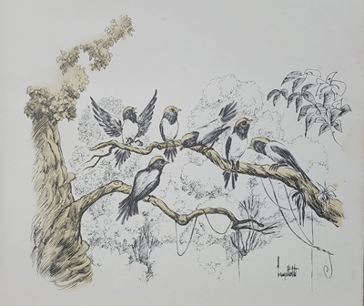
Ficaram todos atentos olhando os pássaros. Falando em voz baixa, o Arrelia explicou:
- São os tangarás! Os pássaros músicos e dançarinos! Prestem atenção e não façam barulho!
Logo um dos pássaros, o chefe, começou a cantar e os outros ficaram em silêncio. Quando parou, os outros romperam a cantar ao mesmo tempo. Depois pararam o canto e começaram a saltitar aos pares até o chefe fazer um sinal. Voltaram aos seus lugares e recomeçaram a cantar enquanto agora o chefe dançava. Os outros passarinhos, sem parar de cantar, começaram uma estranha dança. Uns momentos depois houve outro sinal do chefe e voaram todos para longe.
As crianças explodiram em risos e comentários.
- Vocês viram que Beleza? – exclamou o Arrelia, entusiasmado. Eles tem até um maestro!
Vieram as perguntas de uma só vez e o Arrelia não sabia a quem atender primeiro.
- Como será que aprenderam a dançar e a cantar daquele jeito? – perguntou Marisa quando o tumulto cessou.
O Arrelia fez uma expressão preocupada:
- Quem sabe? A Natureza é misteriosa. Seria difícil dar uma explicação. Tem uma estória que diz como foi. Mas é estória.
As crianças sentaram-se mais perto dele. Carlinhos segurava cuidadosamente o rabo de seu futuro papagaio.
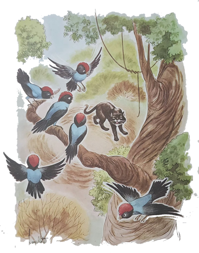
- Diz esta estória que muitos anos atrás os pássaros eram todos amigos. Não sabiam brigar. Viviam juntos e juntos cantavam alegremente. Repartiam os alimentos entre si e um ajudava o outro a fazer o ninho. Era muito comum ver um tangará conversando com um beija-flor, um beija-flor com um bem-te-vi e assim por diante.
Um dia, porém, surgiu a primeira briga. Um bando de beija-flores morava numa grande árvore junto com os tangarás. Viviam dando festas, e as outras aves vinham aos milhares para ver aqueles bailes maravilhosos. Mas os tangarás não dançavam nem cantavam como hoje. Isto eles aprenderam depois.
Tudo corria alegremente até que um dia surgiu um gato na floresta. Era o fim do sossego. Os pássaros começaram a viver sobressaltados. Não tinham mais coragem de pousar no chão. Só o faziam com sentinelas distribuídas por toda a redondeza. Quando o gato apontava, as sentinelas avisavam: “Aí vem ele!” – e as aves voavam para os galhos mais altos que podiam encontrar.
O gato, por sua vez, vivia “preocupaudo” e pensava: “Se eles continuarem escapando assim, vou morrer de fome. Preciso tapeá-los.” Tratou então de iludir os pássaros:
- Mas que é isso, amigos? Até parece que não gostam de mim! Pois gosto muito de vocês e podemos ser como irmãos. Venham! Vamos passear juntos!
- Sabemos que você gosta de nós – respondeu um tangará. Gosta tanto de nós que quer guardar-nos no seu estômago, não é mesmo?
- Mas será possível? Não confiam em mim?
- Confiamos, sim. Como não? Confiamos mas de longe! Bem de longe!
As coisas não iam mesmo bem para o gato e ele começou a dar tratos à cabeça para encontrar um jeito de abocanhar aqueles pássaros apetitosos. Seu estômago resmungava de fome e o pobre estava “desesperaudo”.
Um dia ele teve uma ideia: já sabia o que fazer para ludibriar a esperteza daqueles danadinhos. Saiu pela floresta e começou, com muito cuidado para não ser percebido, a catar as penas que achava.
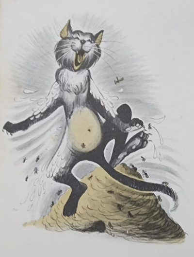
- E para que o gato queria penas? – estranhou Jaci.
- Para o que podia ser? – adiantou-se Carlinhos. Como rlr não podia comer os pássaros, tinha de contentar-se com as penas, não é, Arrelia?
- Pronto! – exclamou o Arrelia! O grande sábio já descobriu tudo! Mas tem cabimento um gato comer penas? Nada disso! Vocês já vão saber para o que era.
O gato andou por ali pegando todas as penas que encontrava. Quando viu que eram suficientes para o que desejava fazer, saiu à procura de uma colmeia. Depois de muita procura deu com uma escondida entre uns troncos caídos. Pulou de alegria e não perdeu tempo em meter as garras em busca de mel. Pulou de tristeza ao levar umas valentes ferroadas das surpresas abelhas. Sofreu mas sofreu conformado. Valia a pena. Finalmente conseguiu arrancar alguns favos de mel e saiu o mais depressa que pode, sempre perseguido por elas.
Seguiu para o lugar onde havia deixado as penas e passou um tempão gemendo e praguejando por causa das ferroadas. Assim que se sentiu melhor . . .
- Engoliu todo mel! – interrompeu Iberê.
- Engoliu a sua língua! Adivinhão! – respondeu o Arrelia, fingindo estar zangado. Ele não queria o mel para comer!
- Não?! – surpreendeu-se o menino. Para que então?
O Arrelia tomou um ar respeitoso:
Se Vossa Excelência permitir que eu fale, logo saberá para quê.
O menino ficou meio encabulado e o Arrelia prosseguiu:
- Assim que se sentiu melhor, passou o mel por todo o corpo e cobriu-se com as penas. Depois de terminar, ele parecia um grande e estranho pássaro. Saiu todo satisfeito em direção ao lugar onde as aves moravam. “Agora – pensou ele – vamos ver quem é mais esperto. Vão acreditar que sou uma ave e me receberão. Aí . . . Aí terá fim a minha fome”. Foi chegando todo contente, certo de que o truque não falharia. Mas, ó desilusão! As sentinelas gritaram e quando o gato chegou não tinha um pássaro no chão. Não desistiu e procurou tapear os pássaros, que o olhavam lá do alto de seus galhos:
- Olá, meus amiguinhos! Acabo de chegar a esta floresta e quero travar conhecimento com vocês. Vamos ser bons amigos como são todas as aves. Venham! Desçam que desejo cumprimentá-los!
- E por que não vem você aqui em cima? – perguntou um dos pássaros.
O gato confundiu-se um pouco mas logo respondeu:
- Não vê que sou uma ave muito pesada e que não posso voar?
Os pássaros fingiram acreditar w um deles dirigiu-se mais para a ponta do galho e falou:
- Muito bem. Estamos de acordo em fazer amizade com você. Já que não pode subir até aqui, nós desceremos até aí.
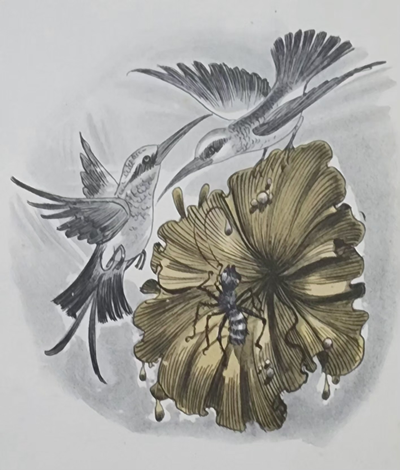
- Ótimo! – exclamou o gato todo contente.
- Mas antes – continuou o pássaro – desejamos arrumar-nos melhor em respeito a tão importante visita. Queira sentar-se naquele monte de terra, que banco melhor infelizmente não temos para oferecer, e esperar.
O gato, antegozando o prazer daquele esperado almoço, não hesitou e sentou-se no monte de terra que era, sabem o quê? Um formigueiro. As formigas não esperaram. Atacaram o intruso com todas as suas forças. Quando sentiram o gosto do mel então . . . Foi um banquete. O gato atirou-se ao chão, miou, xingou, e as formigas firmes nas “mordiudas”. As penas começaram a voar, e um pássaro gritou lá de cima:
- O seu disfarce estava muito bom, compadre. Só que não se lembrou de uma coisa: não tem ave de quatro pernas!
- Ah! Malandro! – gritou o gato, coçando-se como louco. Vocês me pagam!
Saiu dali correndo e não teve outro jeito senão ir ao riacho e tomar banho.
- E gato não gosta de banho, não é? – disse Marisa.
- Pois veja que não foi Pequeno o sofrimento do coitado – respondeu o Arrelia. Sofreu que nem um “condenaudo”. As mordidas das formigas o incomodavam que dava dó. Mas não adiantou. Tão logo ficou bom começou a rodear os pássaros.
- Que bicho teimoso, não? – comentou Sérgio. Por que não desistia?
- Teimoso ele era – concordou o Arrelia. Porém mais teimoso era seu estômago. Estava louco por aqueles passarinhos.
No outro dia, quando ele continuava sua ronda, surgiu enfim a “oportunidaude” tão aguardada. Todos os beija-flores estavam voando alegremente, beijando umas lindas e convidativas flores. Um deles achava-se muito distraído tentando papar uma aranha que se encontrava dentro de uma flor. A pobrezinha corria, escondia-se, e o colibri não lhe dava sossego. Tinha decidido engoli-la. Outro beija-flor chegou perto e cismou de caçar também a aranha. O primeiro não gostou:
- Que é isso, compadre? A aranha é minha. Vá saindo.
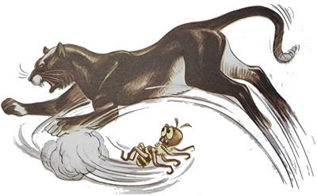
O outro ficou “espantaudo”:
- Mas nós, as aves, não dividimos tudo o que caçamos?
- Ora! Essa Aranha mal dá para um! – respondeu o primeiro, já meio bravo. Vá procurar outra!
- Seu mal-educado! – gritou o companheiro. Pois vou comer essa aranha!
No seu cantinho, dentro da flor, a Aranha, tremendo, ouvia a discussão que se formava lá fora. O primeiro beija-flor não se conformou:
- Pois venha comê-la então! Venha! Se você é passarinho!
O outro ficou por conta. Ia mostrar se era ou não passarinho. Não esperou mais e meteu o bico na flor. Foi a conta. O primeiro colibri caiu em cima dele e formou um sururu daqueles. Como era a primeira briga de pássaros que acontecia, as outras aves ficaram completamente bobas, de bico aberto. Foi assim que elas aprenderam a brigar.
Quem saiu ganhando com a briga foi a aranha. Não esperou. Arrumou depressa as malas, ajeitou o vestido e saiu que nem uma bala à procura de um esconderijo melhor.
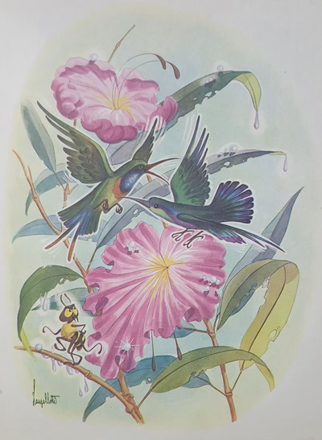
Os dois briguentos continuaram a lutar como doidos. Acabaram indo ao chão, onde prosseguiram a luta.
O pior era que o gato andava ali por perto e foi atraído pela algazarra. O que seria aquilo? Tratou de averiguar e num piscar de olhos percebeu que chegara sua grande oportunidade. Foi em vão que os outros pássaros começaram a gritar: “Cuidado! O gato! Olhem o gato!” Os dois estavam tão concentrados na briga que não ouviam nada. O bichano correu para eles, quase pisando na aranha que ia embora a toda a velocidade. Pegou-a de raspão, sem nada perceber, e deu-lhe um tombo. Ela levantou-se resmungando, limpou a poeira do vestido, segurou as malas e apertou ainda mais o passo.
O gato deu um pulo, caiu em cima dos dois beija-flores e num instante eles desceram pela sua garganta abaixo. Os outros colibris ficaram desesperados. O que fazer? Atacar aquele monstro? De que jeito?
Enquanto o gato sorria e passava a língua pelos beiços, alguns colibris voaram até onde estavam os tangarás e suplicaram que os ajudassem a salvar os companheiros. O chefe dos tangarás disse que não sabia como. Pôs-se, porém, a refletir e esclareceu que ia tentar um plano. Era apenas uma ideia. Enfim, como não sabia de outro modo . . . Os colibris imploraram-lhe que o fizesse logo. Não havia tempo a perder! Os dois colibris poderiam morrer de falta de ar dentro da barriga do gato!
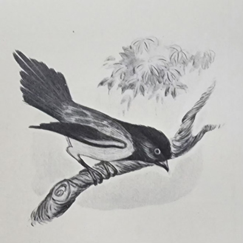
O chefe dos tangarás voou para um galho mais perto do gato e disse-lhe:
- Meus parabéns, compadre, pela esperteza. Muito bem. Papou dois de uma vez. Só você.
O gato ficou todo orgulhoso mas não respondeu de medo de abrir a boca e deixar que os passarinhos fugissem. O tangará continuou:
- Queremos prestar-lhe uma homenagem pelo seu Feito. Já que almoçou, vamos cantar e dançar um pouco para que tenha uma boa digestão.
O gato respondeu: “Hum, hum”, ainda sem abrir a boca, e deitou-se calmamente ao pé da árvore.
O tangará voltou a reunir-se aos outros e disse-lhes:
- Vamos cantar e dançar, mas de um modo tão bonito que deixe o gato de boca aberta, compreenderam? Prestem atenção aos meus gestos e façam exatamente o que eu mandar.
E assim foi. Os tangarás, seguindo os gestos do chefe, dançaram com tal perfeição e cantaram com tanta graça que o gato, a princípio indiferente, foi ficando interessado, a tal ponto que acabou por abrir a boca.
Os dois beija-flores que estavam na barriga do gato viram a claridade e saíram que nem flechas: zum!
Pobre do gato. Ao perceber o logro, bateu com a cabeça no chão, miou, tentou subir na árvore mas não deu certo.
Aí o chefe dos tangarás gritou:
- Não adiante, compadre! Aqui você vai morrer de fome! Vá caçar noutra freguesia!
E foi o que o gato fez. Naquele mesmo dia tomou seu caminho. Partiu ao som da maior festa que os pássaros já haviam realizado. E foi assim que os tangarás aprenderam a dançar e a cantar como vimos.
- Que engraçado! – exclamou Carlinhos.
Cada uma das outras crianças expressou sua opinião. O Arrelia olhou para a mão de Carlinhos e ficou admirado:
- O quê! Você ainda está segurando esse pano?
- Vou fazer um quadrado! – disse o menino. Não sei fazer muito bem mas vou tentar.
- Olhe. Se você quer, eu faço um – propôs o Arrelia.
- Você sabe fazer? Sabe mesmo?
- Mas que pergunta? De pequeno, eu era o rei dos fazedores de quadrados! Os que eu fazia subiam tanto que entravam nas nuvens!
Carlinhos ficou espantado. Jaci respondeu o Arrelia:
- Mas que exagero! Tem de ser cego, surdo e mudo para acreditar nisso!
- Você não acredita? – zangou-se o Arrelia. Pois vou fazer um quadrado que vai voar que nem uma garça!
Marisa interrompeu a discussão dos dois:
- Arrelia! Você não sabe outra estória sobre os tangarás?
- Outra? – espantou-se ele.
- É, outra. Gostei de ouvir falar sobre eles.
- Bem, Não sei se conheço outra.
Enquanto o Arrelia pensava, Carlinhos continuou a fazer furiosamente o rabo de seu futuro quadrado.
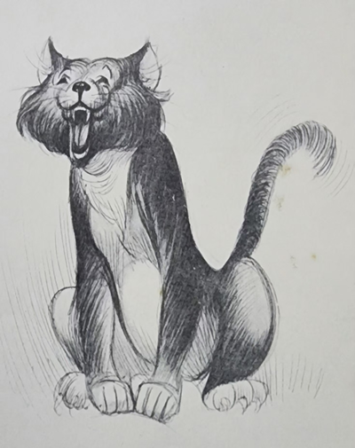
- Tem uma – começou o Arrelia – que . . . Mas não sei se vão gostar. Em todo caso . . . Dizem que isto aconteceu numa cidade perto daqui, também, é claro, há muito tempo. Morava nessa cidade um músico muito competente conhecido por Mestre Ambrósio. Sua mulher chamava-se Dona Rosinha.
A paixão dele era a música. Tocava quase todos os instrumentos e regia uma orquestra muito boa. Também gostava de dançar, por causa da música, é lógico, e não perdia um baile. Embora não apreciasse muito a música nem bailes, sua esposa acompanhava-o pacientemente. Mas a paixão dele pela música era exagerada. Demais. Só lia sobre música, só falava sobre música. Ora tocava um instrumento, ora tocava outro. O casal tinha diversos filhos, todos meninos, ainda pequenos. O pai, porém, olhava-os com esperança: “Eu e meus filhos seremos uma orquestra!”
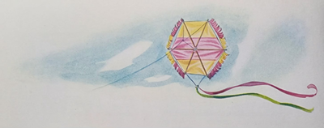
Os músicos admiravam sinceramente o grande maestro apesar do que sofriam com ele. Era exigente como ninguém. Não perdoava nenhuma falha, nenhum esquecimento. Contudo compensava. Quando a orquestra terminava de tocar, os músicos, vendo os assistentes de pé aplaudindo-os com entusiasmo, concordavam que o sacrifício a que eram submetidos pelo mestre compensava.
- Você gosta de música, Arrelia? – interrompeu Sérgio.
- É claro que gosto! – espantou-se o Arrelia. Você não gosta?
- Gosto. Em casa, meu pai vive tocando discos. Mas é música . . . Como se diz? Ah! Música fina!
- Pois é dessa que também gusto. Agora, aprecio outros gêneros de música também, é claro. Sendo bonitas . . . O folclore, por exemplo, tem músicas interessantes, sugestivas. E os nossos chorinhos e as nossas valsas? Êta “beleuza”! Mas a música fina é um mundo à parte. Feliz daquele que consegue entrar nesse mundo, pois terá um lugar onde sempre encontrará refúgio.
- Nossa! – exclamou Jaci. Como o homem está poético! Vejam só!
- Bem, vamos voltar à estória – disse o Arrelia.
- A fama do Mestre Ambrósio corria o País. Chioviam tantos convites que ele não dava conta. E quanto maus famoso ele ficava, mais exigente e estudioso se tornava. Seu desejo de perfeição chegou a tal ponto que os músicos que tocavam com ele não aguentaram mais. Pouco a pouco, Mestre Ambrósio foi ficando sozinho.
- Você precisa ser menos exigente! – dizia-lhe Dona Rosinha.
Mas ninguém ia conseguir convencê-lo, e ele acabou ficando sozinho. Resolveu então, para poder viver, tornar-se professor. Não lhe faltaram alunos. Quam não queria estudar com o famoso maestro? Porém aconteceu a mesma coisa. Seus alunos não aguentaram tão grande exigência e novamente ele ficou sozinho.
Depois de muito pensar, o mestre resolveu desistir da música. Já que os outros não podiam subir até onde ele estava, ele não ia descer até onde se encontravam os outros. E como era pobre, precisava encontrar novo modo de vida. Abriu um pequeno negócio e não permitia que ninguém lhe falasse em música. Quanto aos seus filhos, estavam terminantemente proibidos de aprender a tocar qualquer instrumento e de ir a bailes.
Meses mais tarde, ele descobriu que não era obedecido pelos filhos. Todos, às escondidas, dedicavam-se a aprender música e a dançar. Foi um escândalo. Mestre Ambrósio ficou bravo e brigou com eles. Nada adiantou. Estavam minados pela música e nada podia detê-los. Mas o mestre não quis saber. Tão grande era o amor que os filhos do antigo maestro sentiam pela música que a música compadeceu-se deles e um a um foram sendo transformados em tangarás e partindo para a floresta onde até hoje podem dedicar-se à vontade à sua paixão musical.
O Arrelia, terminando a estória, levantou-se, no que foi seguido pelas crianças, e trataram de voltar, pois a hora do almoço já estava próxima. Carlinhos puxou-lhe o paletó e disse-lhe:
- Não vá esquecer sua promessa, hein?
- Que “promeussa”? – espantou-se o Arrelia. Eu não prometi nada!
- Prometeu, sim! Você não disse que ia fazer-me um quadrado?
- Um “quadraudo”? Ah é! E por que não disse logo?
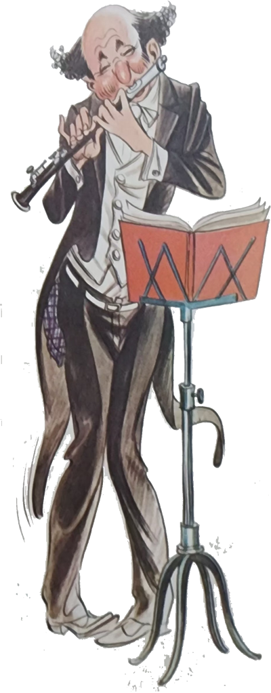
- E vai fazer antes do almoço, vai? Não estamos mesmo com fome. Se não der tempo de almoçar, paciência.
- Olhem só a coragem dele! – exclamou Iberê. Estou com o estômago nas costas e ele fala isso!
As outras crianças também entraram na rebelião e Jaci propôs:
- Vamos jogar o Carlinhos num formigueiro?
- Boa ideia! – aprovou Iberê. Mas primeiro vamos passar mel nele! Assim as formigas vão gostar!
Avançaram para Carlinhos e ele refugiou-se no Arrelia:
- Não deixe que eles façam isso comigo! Não deixa!
- É brincadeira deles! – afirmou o Arrelia abraçando o menino. Acha que iam ter coragem de fazer tal coisa?
- Não sei, não – considerou o menino, desconfiado.
Tudo acabou em risada, e o Arrelia dirigiu-se a Carlinhos:
- Vamos almoçar e depois farei o “quadraudo”. Não precisa preocupar-se.
Depois do almoço o Arrelia saiu acompanhado pelas crianças à procura de um pedaço de taquara para fazer a armação do papagaio. Pelo caminho ele ia explicando:
- Fazer um bom papagaio é uma arte. A taquara tem de ser bem escolhida. Deve estar no ponto para que as varetas sejam leves e flexíveis. Preparar as varetas é outra coisa difícil. Requer talento, muito talento! Devem ficar iguais para que o peso seja bem distribuído.
Os meninos estavam pasmados. Já haviam feito muitos quadrados mas não sabiam que eram tantos os segredos.
- Colar o papel também não é fácil – prosseguiu explicando o Arrelia. A cola deve ser pouca e passada com cuidado.
- Puxa, Arrelia – interrompeu Iberê. Já fiz muitos quadrados e não tomei esses cuidados. No entanto eles subiram.
- Subiram? – caçoou o Arrelia. Podem ter subido um pouco mas o que vou fazer subirá como uma garça e alcançará as nuvens. Jamais vocês hão de ver um espetáculo igual.
Depois de recusar muitos pedaços de taquara, ele acabou encontrando o que desejava:
- Este pedaço de taquara sim. Está no ponto. Vai dar umas varetas daqui! Olhem, vamos até àquele armazém comprar papel de seda e linha. E também cola. Não vamos esquecer de comprar pelo menos três carretéis de linha.
- Três carretéis de linha?! – surpreendeu-se Carlinhos.
As outras crianças repetiram em coro:
- Três carretéis de linha?!
- Ué . . . Por que estão assustados? Eu não disse que o quadrado ia alcançar as nuvens?
No armazém foi outro suplício. O Arrelia pôs-se a escolher o papel com todo o cuidado: sentia-o com os dedos, olhava-o contra a luz. Depois foi a vez da linha. Fez perguntas sobre a sua qualidade, experimentou-a. Lembrou-se da cola. Fez o homem jurar que a cola era de boa qualidade, já que não possuía a marca que ele desejava.
Feitas as compras, tomaram o caminho de volta. Carlinhos quis carregar o material mas o Arrelia não concordou:
- Nada “diusso”. Você pode amassar o papel, perder a taquara . . . Comigo está mais seguro.
Voltaram a casa, o Arrelia pediu uma faca bem amolada e uma tesoura que não mastigasse. Largou a bengala, tirou o chapéu, o paletó, arregaçou as mangas e pôs mãos à obra. Não deixou que ninguém o ajudasse:
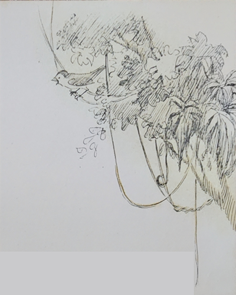
- Faço questão de executar um quadrado que marque época. Vão desculpar-me mas não posso permitir que a obra de arte que vou fazer seja prejudicada. Tem de ser perfeita.
- Ih! Coitado do Arrelia! – cochichou Jaci. Ele está como o músico daquela estória! Quer fazer uma obra perfeita!
O Arrelia ouviu, fingiu não ter ouvido e ficou todo orgulhoso com a observação da menina.
Após muito trabalho, o Arrelia deu o papagaio por terminado:
- Aqui está. Vejam! Uma joia. Uma verdadeira joia. Venham! Vamos empiná-lo! Vocês vão ver só!
Arrumou-se e saíram apressadamente.
Depois que encontraram um lugar propício, uma campina que parecia não ter fim e sem nenhuma árvore por perto que pudesse atrapalhar, o Arrelia pôs a bengala e o chapéu no chão e preparou-se para correr. Carlinhos esclareceu que afinal era o dono do quadrado e a ele pertencia o privilégio de empiná-lo. Não adiantou. O Arrelia respondeu-lhe:
- Deixe comigo. Não é fácil. Depois que eu tiver dado um carretel, você toma conta, hein? Emenda o outro e depois o outro.
Carlinhos concordou com entusiasmo e o Arrelia disparou pelo campo. Deu uma volta, duas, três. O papagaio mal saiu do chão. Ele parou ofegante:
- Sabem o que é? Não estou costumado a correr. É preciso mais velocidade!
Dirigiu-se a Carlinhos:
- Tome o quadrado. Experimente você que vai dar certo.
Carlinhos deu tudo o que podia mas foi a mesma coisa. Iberê tentou, Sérgio tentou porém o quadrado não estava disposto a voar que nem uma garça, ainda mais chegar às nuvens.
Jaci olhou para o Arrelia e este procurou disfarçar apanhando a bengala e o chapéu.
- E ia voar como uma garça, hein? – disse a menina. Ia entrar nas nuvens, não é?
O Arrelia tratou de defender-se:
- Deve ser o rabo. Foi a única coisa que não fiz.
- Já sei! Você fez o quadrado pensando numa tartaruga – caçoou Jaci. Não pode subir mesmo!